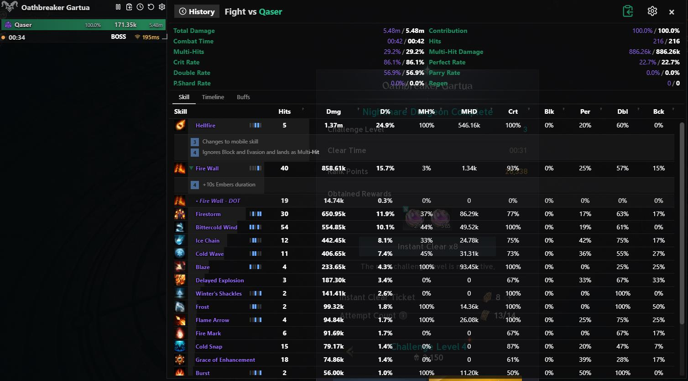
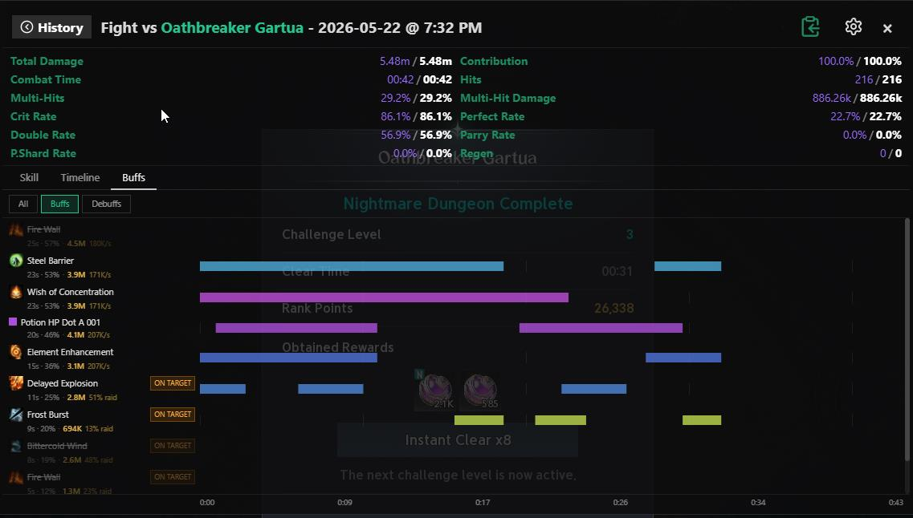
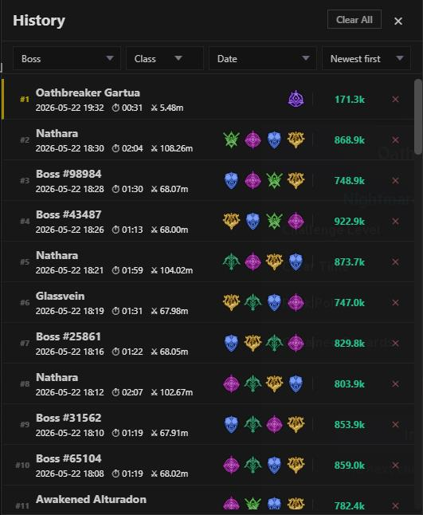
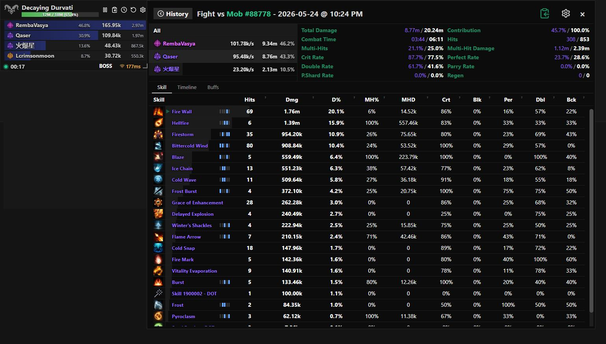

aion2t.com DPS Meter
Free real-time DPS overlay for Aion 2 — see every party member's damage as it happens.
Free real-time DPS overlay for Aion 2 — see every party member's damage as it happens.




Install Npcap (required for packet capture). In the installer: tick "Install Npcap in WinPcap API-compatible Mode" and leave "Restrict Npcap driver's access to Administrators only" unchecked. Otherwise the meter can't capture — it either shows "Npcap is required for packet capture" or stays empty (run the meter as administrator if the restriction is on).
Download the installer — aion2t-dps-setup-1.1.22-x64.exe
Run the installer. If Windows SmartScreen appears — click More info → Run anyway.
Launch aion2t.com DPS from the Start menu or desktop shortcut.
Start Aion 2 and enter a dungeon — the overlay populates automatically as combat begins.